Home
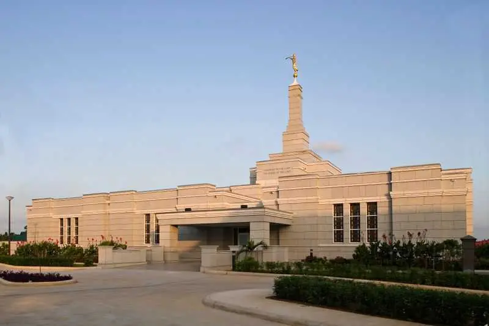
Aba Nigeria Temple
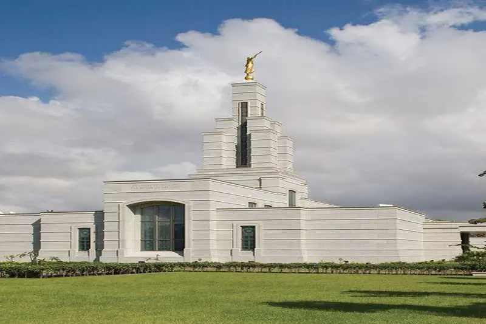
Accra Ghana Temple
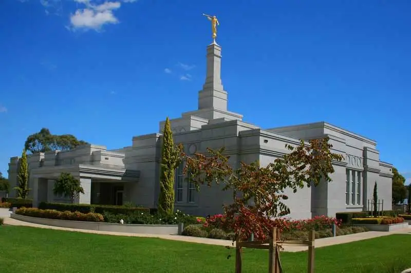
Adelaide Australia Temple
 Albuquerque New Mexico Temple
Anchorage Alaska Temple
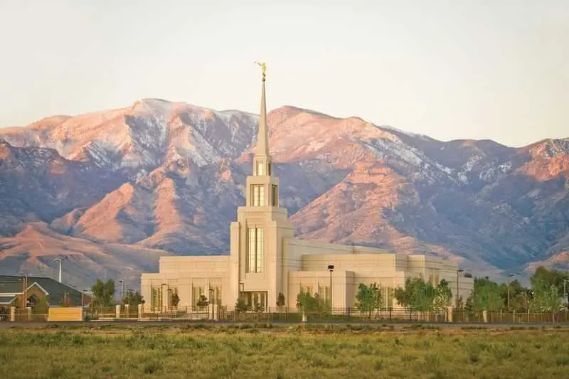
The Gila Valley Arizona Temple
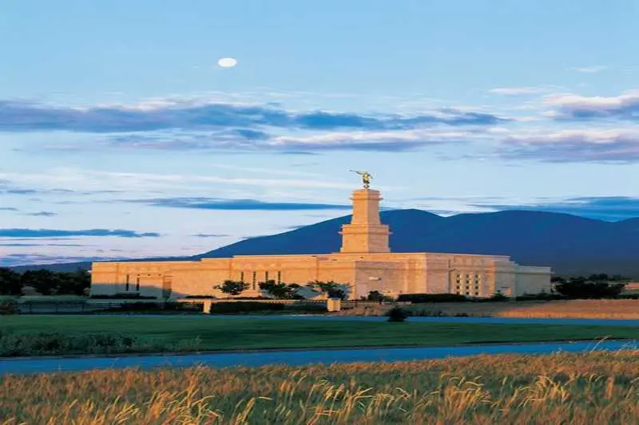
Monticello Utah Temple
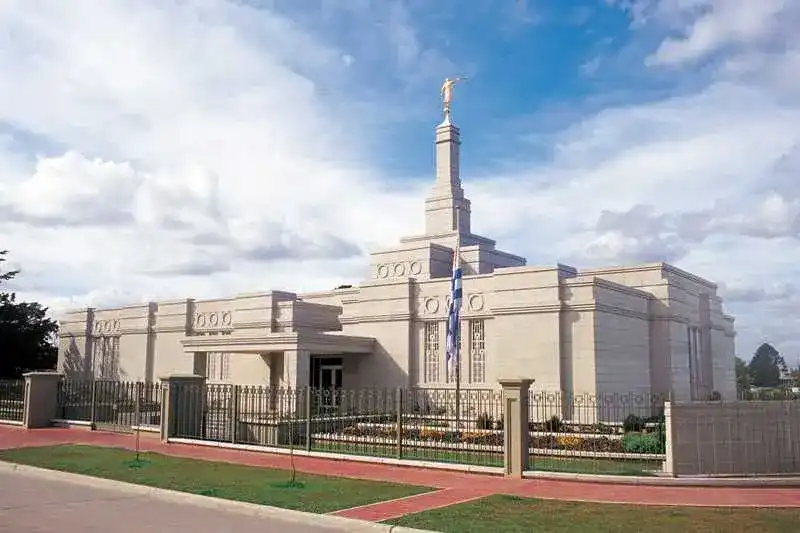
Montevideo Uruguay Temple
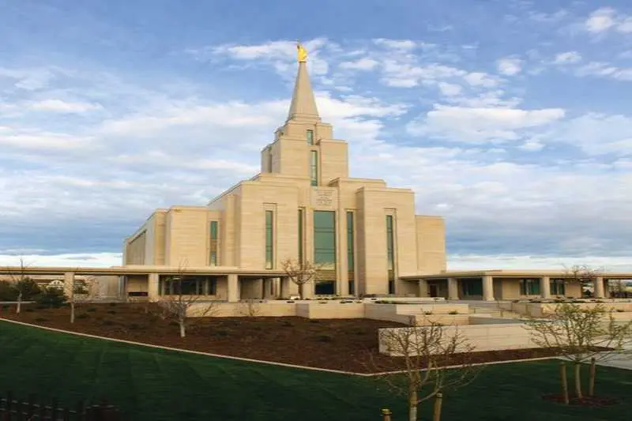
Oquirrh Mountain Utah Temple
Albuquerque New Mexico Temple
Anchorage Alaska Temple
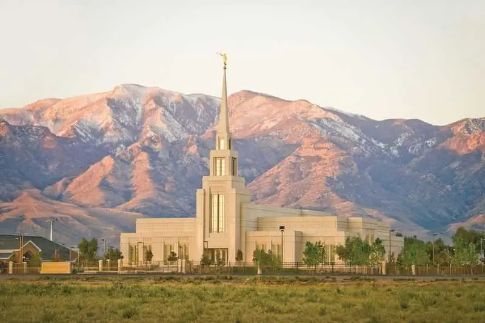
The Gila Valley Arizona Temple
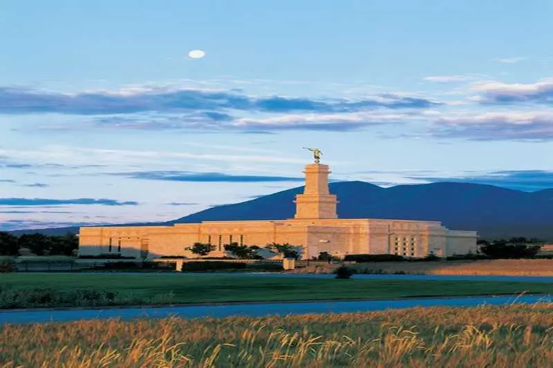
Monticello Utah Temple
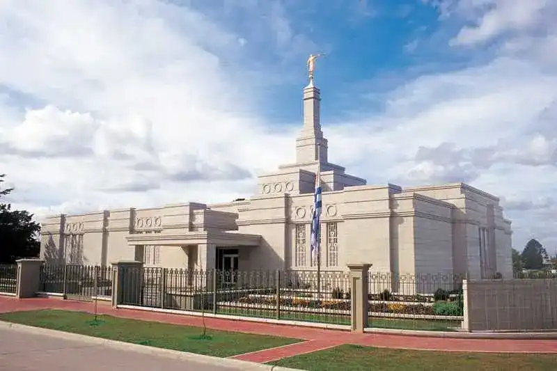
Montevideo Uruguay Temple
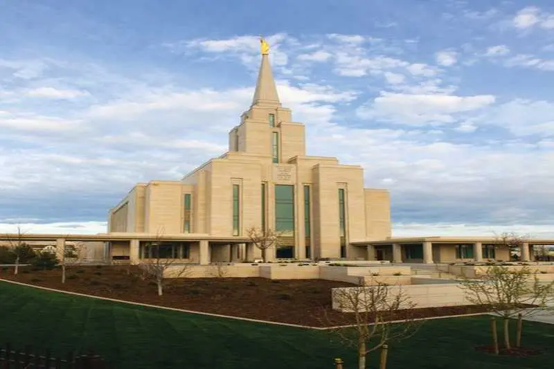
Oquirrh Mountain Utah Temple